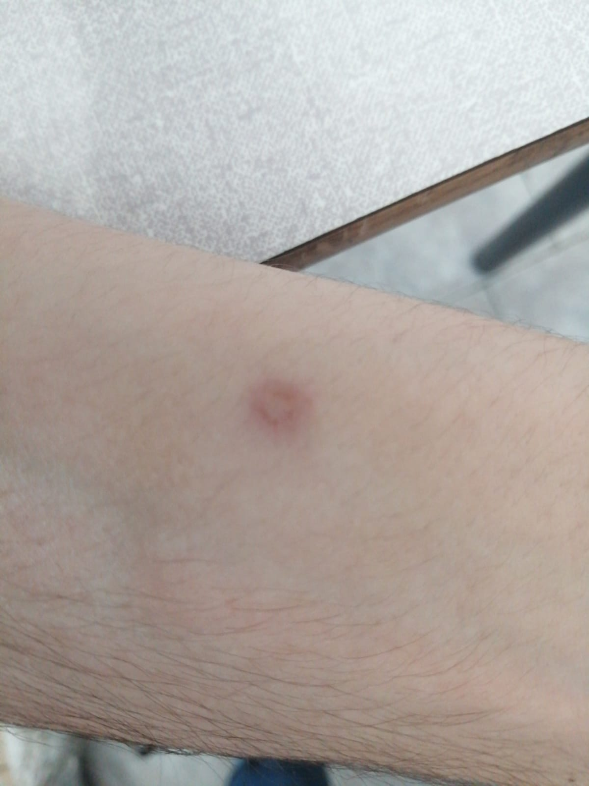

Ridolfi. Ferito gravemente da arma ad aria compressa. Stavolta non si scherza.
🕑 4 giugno 2021
La scorsa domenica si è svolta una battuta amichevole nei pressi di Montebibico (non molto lontano da Baiano),
che ha visto coinvolte le rinomate squadre "je tiro ma non ce cojo" e "Baiano Hunters C&P". Durante lo scontro,
Alessandro Flavio Ridolfi, grande amante di tale disciplina, è stato colpito duramente da un proiettile avversario.
Subito il CEO ha segnalato il suo stato ai compagni e, allo stremo delle forze, ha cercato di resistere
fino all'arrivo dei SIB (Soccorsi Istituzionali di Baiano), che lo hanno portato via senza lasciare dichiarazioni
Le ultime notizie risalgono proprio a stamattina, quando il magnate ha pubblicato sui vari profili
social la foto che trovate di seguito, e sotto ha scritto:
"Sto bene, grazie a tutti. Ponzia' te vengo a cerca' a casa..."
Un po' irritato? Non possiamo di certo biasimarlo, d'altronde è stato colpito in area protetta.
Ancora una volta il Generale Lorenzo Natali, che era presente, ha esposto il suo punto di vista;
una testimonianza sempre gradita.
«Purtroppo o pe fortuna... ce stio anch'io quillu jorno. Che jia a fini male ce n'erevamo ccorti subbitu,
da quanno ce scordessimo de mette a naffeta su quella cazzo de panda...che je pija nn corbu 10 chilometri
a piedi tra cuturoni e madonne ce fece fa. Pe falla corta, Ponziano ha sentitu smove la un sepaccio,
ha carcatu e je tirato na schioppettata. Unu strillu che manco li porchi scannati...
ma non ci stia Ridolfi corgu che se stia a caca' addossu?! Le votte lu poru Ponziano...
Poru cristiano, pe na scoppiettata lo facette armane' da per issu in mezzu a macchia,
so 3 giorni che o stonno a aspetta li casa.»

Anche un'altra nota figura ha voluto dire la sua.
Lorenzo Tolomei ha infatti commentato nella chat dello staff del
tour:
«Allibito. Ho rischiato di cadere nei binari. Ero alla stazione quando mi è stata data
la notizia della ferita di Ridolfi, da quanto ho capito si tratta di una ferita di diametro
importante riportata durante prove tattiche di assalto pluriplotonale. Ma sono sicuro che ne
uscirà più forte di prima, issu è RIDOLFI mica Pandolfi!»